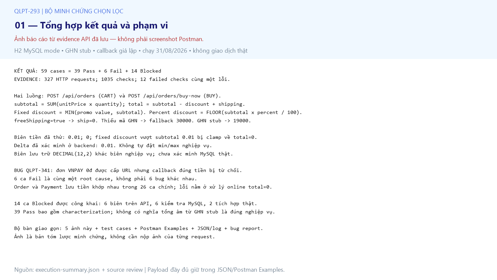
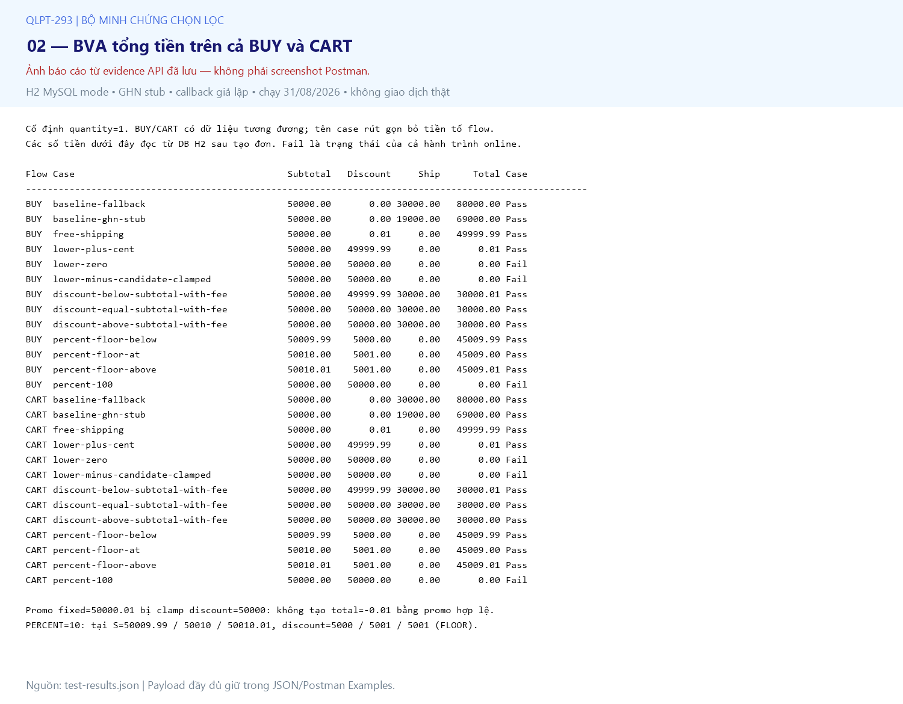
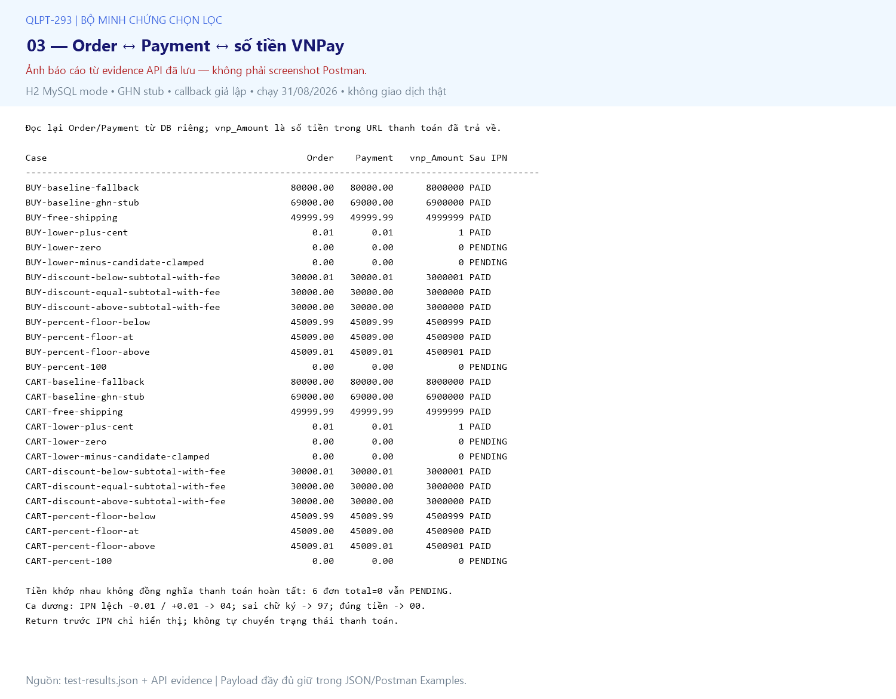
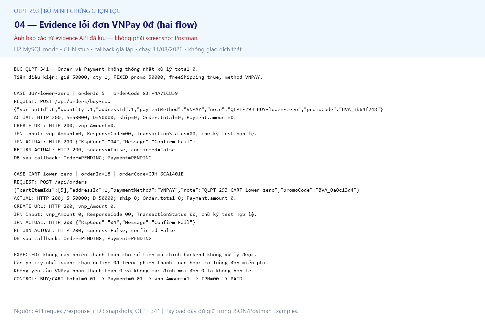
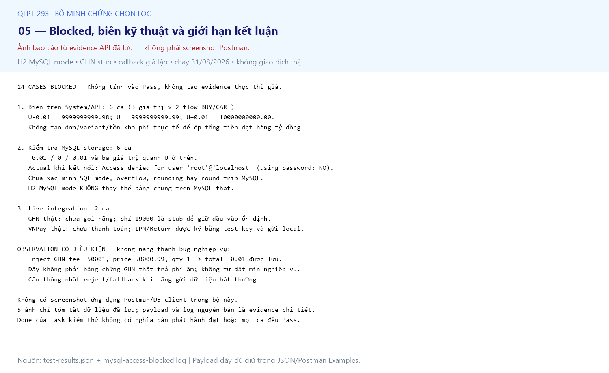

QLPT-293 — Bộ 5 ảnh chọn lọc
Ảnh báo cáo từ evidence đã lưu, không phải screenshot Postman. Xem JSON/log để đối chiếu.
01 — Tổng hợp kết quả và phạm vi

02 — BVA tổng tiền trên cả BUY và CART

03 — Order ↔ Payment ↔ số tiền VNPay

04 — Evidence lỗi đơn VNPay 0đ (hai flow)

05 — Blocked, biên kỹ thuật và giới hạn kết luận
